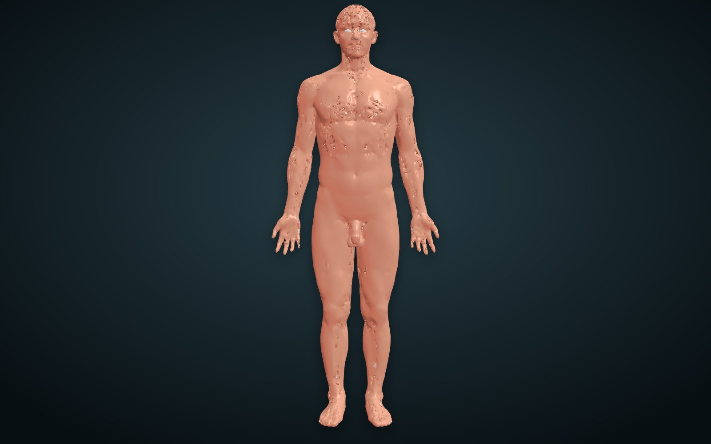
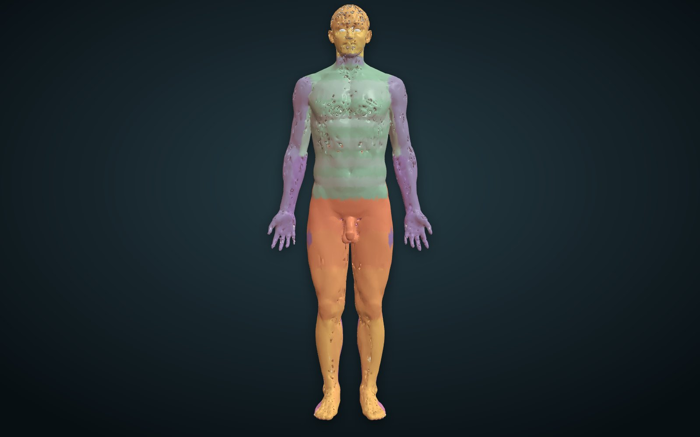
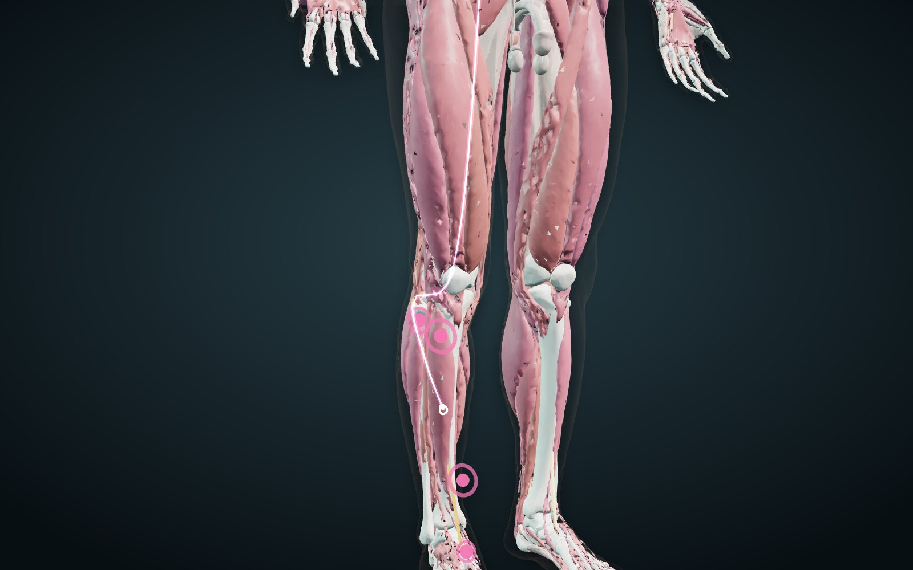
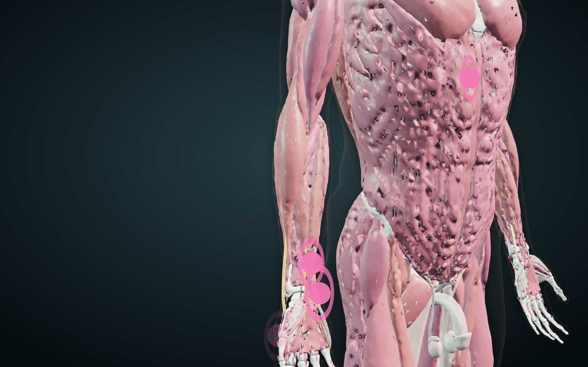
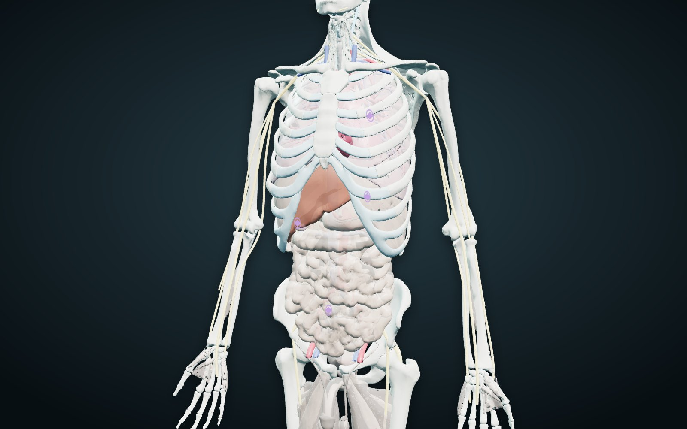
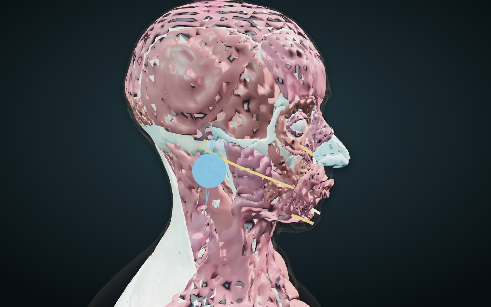
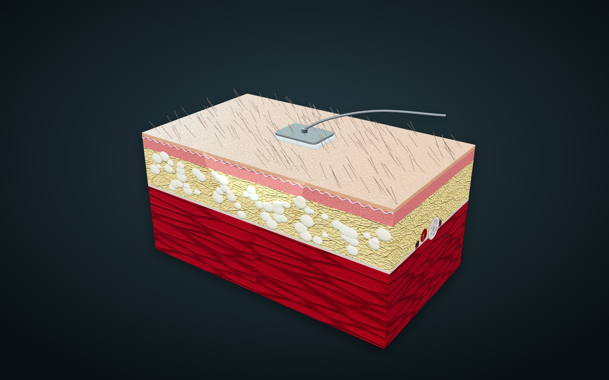
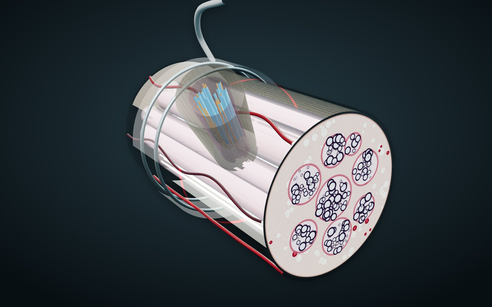
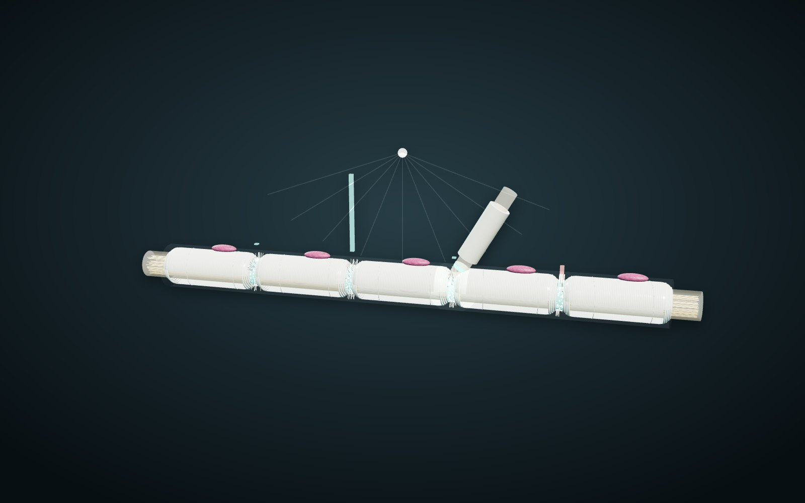
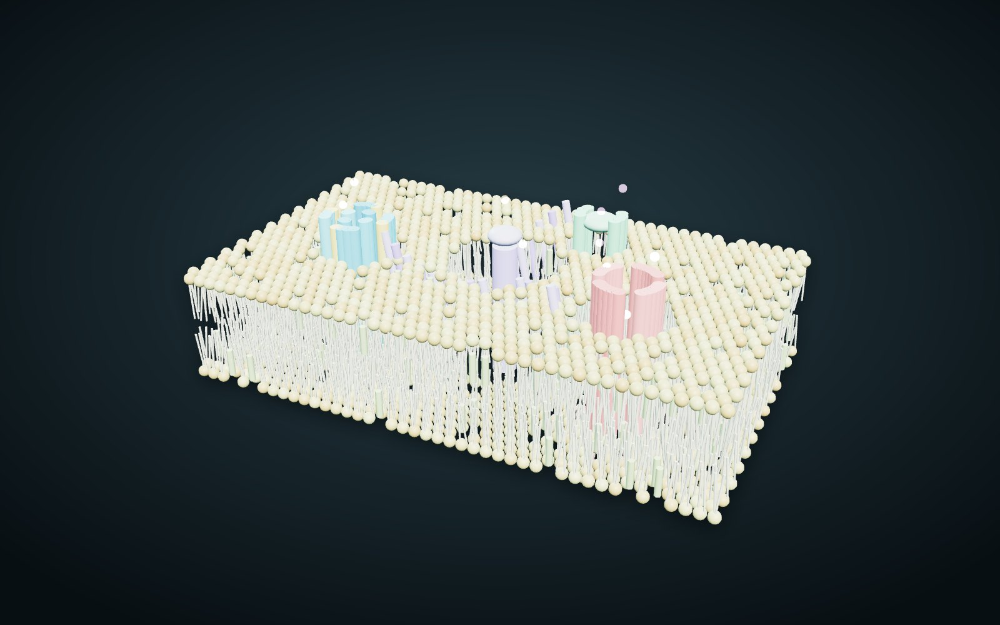

O que é o axon — e o que ele não é
Um laboratório in silico para entender, comparar e ensinar a biofísica da neuromodulação, com resultados reproduzíveis e procedência explícita.
✔ É
Ferramenta de pesquisa, ensino e modelagem computacional. Implementa o modelo nodal de 41 nós do livro, verificado (resolve corretamente as equações que afirma resolver) e reprodutível com semente 42.
✘ Não é
Dispositivo médico, protocolo clínico prescritivo nem substituto de avaliação profissional. Não aceita dados de pacientes e não calcula dose para pessoas.
Primeiros passos
- Acesse https://axon.m3d.pro num navegador com WebGL (Chrome, Edge, Firefox ou Safari atuais). Não há instalação. A página inicial apresenta o programa de pesquisa com um diorama 3D animado: o controle Intensidade do estímulo mostra as fibras do tato (Aβ) disparando antes das fibras da dor (Aδ). Dali, Ir para o simulador abre o app (/simulador.html) e Ir para a documentação leva a estes manuais.
- Escolha o idioma nas cinco bandeiras do canto superior direito: 🇨🇳 Mandarim, 🇪🇸 Espanhol, 🇬🇧 Inglês, 🇮🇳 Hindi, 🇧🇷 Português. A escolha fica salva neste navegador.
- Observe o indicador ao lado da versão: API 0.1.0-alpha significa servidor conectado (IA do tradutor e do Axon Bot ativas); offline significa que tudo roda no seu navegador — o modelo continua completo.
- Clique num ponto pulsante do corpo (por exemplo, L5/S1) ou gire a roda do mouse sobre o palco para descer de escala.
Anatomia da tela
A ilustração do topo numera as dez áreas fixas do ambiente. Use esta tabela como legenda.
| # | Área | Para que serve |
|---|---|---|
| 1 | Painel esquerdo retrátil | Anatomia e sintomas, biofísica explicada e protocolo passo a passo — muda com a escala e a intervenção. |
| 2 | Régua de escalas | Salta entre os 5 níveis; −/+ sobem ou descem um nível. |
| 3 | Palco 3D | Corpo translúcido com dermátomos, nervos, vago, cadeia simpática e acupontos; arraste para girar. |
| 4 | Painel direito retrátil | Intervenção, parâmetros físicos, variações anatômicas e impacto previsto. |
| 5 | Seleção de intervenção | TENS, SCS, EA, pressão, taVNS, LIFU, TI e optoacústica. |
| 6 | Janela de recrutamento | Curvas Aβ e Aδ de referência e ao vivo. |
| 7 | Janela de segurança | Medidores das 4 fronteiras teciduais. |
| 8 | Dock | Abre os 8 mini-apps e os manuais. |
| 9 | Axon Bot | Assistente; clique para conversar, 🔊 para silenciar. |
| 10 | Idiomas e estado | Cinco bandeiras, versão e conexão com a API. |
Zoom semântico: cinco escalas ligadas entre si
Cada nível não é só uma ampliação: ele troca o que é mostrado e o que os painéis explicam. A seleção feita num nível (região, intervenção, calibre) acompanha você nos demais.
| Nível | O que você vê | O que reage aos controles |
|---|---|---|
| 1 · Corpo | Anatomia real (BodyParts3D, 930 estruturas) — clique em qualquer osso, órgão, músculo ou vaso para ver o nome e o ID FMA. Pele translúcida com os 30 dermátomos (V1–S5) — clique na pele para identificar o dermátomo; esqueleto completo; encéfalo, coração, pulmões, rins; medula com 29 pares de raízes e gânglios; plexos braquial e lombossacral; 16 nervos nomeados; vago (azul) com ramo auricular; tronco simpático (verde); acupontos (rosa) | Camadas no App 1 (pele, dermátomos, esqueleto, órgãos, nervos, autonômico, acupontos); seleção de região |
| 2 · Região | Epiderme com poros e pelos, derme com papilas e capilares, lóbulos de gordura, fáscia, músculo estriado; nervo com corte histológico, artéria e veias; dispositivo realista da técnica; campo em cascas coloridas; a pele afunda com a pressão | Distância r, tecido adiposo, intervenção, amplitude, pressão |
| 3 · Fascículo | Epineuro com colágeno e vasos, 8 fascículos com perineuro em lamelas, ~300 fibras; na ponta, o corte histológico das mesmas fibras; eletrodo cuff de platina e silicone; brilho da função de ativação | Amplitude, r, variações; contagem no rodapé do palco |
| 4 · Axônio | Mielina com lamelas e afunilamento paranodal, nós de Ranvier com canais NaV agrupados, núcleo da célula de Schwann, neurofilamentos e mitocôndrias; impulso saltando de nó em nó; barras da função de ativação | Calibre D, r |
| 5 · Membrana | Fosfolipídios e colesterol; NaV (4 domínios × 6 hélices, sensor S4 em amarelo), Piezo2 em hélice-propulsor, TRPV1, TRAAK; íons atravessando cada canal | Didático (sem parâmetros) |
Janelas, Dock e o duplo clique para fechar
Painéis laterais
Esquerdo — Anatomia, sintomas & protocolo
Recolha com ‹. As três abas acompanham a escala atual e a intervenção ativa:
Anatomia
Estruturas da região, fibras predominantes (Aα, Aβ, Aδ, C), sintomas associados (alodinia, hiperalgesia, parestesia, dor referida) e o mecanismo esperado da intervenção — cada linha com etiqueta.
Biofísica
Equações da escala atual com o significado de cada variável e os alertas metodológicos do Anexo F.
Protocolo
Roteiro in silico em 7 passos (os já percorridos ficam verdes) e a escada de evidência das Fases 0 a 3.
Direito — Parâmetros & IA preditiva
Os controles mudam conforme o agente físico da intervenção:
| Agente | Controles | Faixa |
|---|---|---|
| Elétrico (TENS, SCS, EA, taVNS, TI) | frequência, amplitude, largura de pulso, área de contato | 1 Hz–10 kHz · 0,05–5 mA · 20–500 µs · 0,005–10 cm² |
| Mecânico (acupressão) | pressão, área de contato | 0–400 kPa · 0,1–4 cm² |
| Acústico (LIFU, optoacústica) | frequência, ISPTA | 0,2–10 MHz · 0–2000 mW/cm² |
| Todos | distância r, calibre D | 0,3–3 mm (verificado até 1,5) · 1–16 µm |
Variações anatômicas (tecido adiposo, desmielinização, perda de fibras finas, hipertrofia perineural, fibrose) alteram a geometria do modelo e deslocam as curvas. O perfil é anônimo: só aceita números geométricos, nunca dados pessoais. HIPÓTESE / EVIDÊNCIA EM INVESTIGAÇÃO
Impacto previsto mostra seletividade Aδ/Aβ, frações recrutadas e margem de Shannon. A linha “Eficácia analgésica” diz deliberadamente não estimável pelo modelo: nenhum número de eficácia clínica é exibido.
Os oito mini-apps
1 · Navegador anatômico
Liga/desliga dermátomos, nervos, cadeias autonômicas e acupontos; atalhos para as 5 escalas e para as 6 regiões.
2 · Estúdio de intervenções
Descrição da técnica, função de ativação Δ²Vₑ ao longo da fibra e fichas próprias: banda de frequência da EA, mapa ABVN da taVNS, mecanotransdução da pressão, difração × atenuação do ultrassom.
3 · Preditor de calibre
Cinco abas: recrutamento, lei de escala, janela de seletividade, mapa calibre × distância e tabela de benchmarks (axon × livro).
4 · Fronteiras de segurança
Medidores de ΔT (Pennes 0D), Shannon k, índice mecânico ou pressão, e indicador crônico.
5 · Ruído & ressonância estocástica
Ajuste σ e veja o sinal subliminar cruzar o limiar; a curva SNR × σ mostra o ótimo intermediário.
6 · Grafos clínico-biofísicos
Cadeia Dermátomo/Sintoma → Via → Intervenção → Modelo/Segurança → Efeito. Arraste nós; clique em dois nós para ligá-los.
7 · Tradutor (5 bandeiras)
Interface via dicionários (funciona offline); fichas técnicas livres via IA do servidor. Símbolos, unidades e etiquetas nunca são traduzidos.
8 · Axon Bot, agenda e salas
Chat ancorado no livro, cronograma de 48 meses (Diagrama 3) e salas de estudo WebRTC.
Modo Simulação: aplique o instrumento e acompanhe o paciente
Escolha um caso clínico, pegue o instrumento, clique no ponto do corpo e veja, no monitor, a resposta hipotética do paciente.
- Entre no modo pelo botão ▶ Simulação no topo ou pelo ícone de controle de jogo no Dock. Abrem-se três janelas: Simulação (caso, passo a passo, desfecho, importar), Monitor do paciente e Rede fisiológica; o painel esquerdo recolhe para dar espaço.
- Escolha o caso na lista. As condições do caso (por exemplo, tecido adiposo ou desmielinização) já são aplicadas às variações anatômicas do painel direito. Para seguir a sugestão, clique em Carregar proposta: instrumento e parâmetros são ajustados.
- Selecione o instrumento na bandeja do palco. Para a agulha, ajuste a profundidade em mm.
- Clique no alvo: na pele (o dermátomo é identificado), na orelha (taVNS) ou num órgão. O instrumento aparece no corpo e uma linha mostra o nervo mais próximo; o monitor indica o nome do nervo e a distância em mm.
- Inicie a sessão no monitor. Acompanhe EVA, FC, VFC, condutância e as frações de fibras. Se fibras motoras (Aα) forem recrutadas, um pulso amarelo marca a contração; Aδ demais provocam o reflexo de retirada (pulso vermelho) e aumentam a dor.
- Avalie o desfecho na aba Desfecho: a faixa provável da EVA após 1 e 5 sessões, a chance de reduzir a dor em 30 % ou mais, a comparação entre as propostas e quais ramificações fisiológicas mais pesaram.
Pontuação
+10 por passo concluído · até +200 pela redução da dor · +50 se ficar dentro das fronteiras · +30 se Aδ < 5 %. Penalidades: retirada −15, Shannon ≥ 1,75 −25, bradicardia −30.
Medalhas
Redução ≥ 30 % · Dentro das fronteiras · Seletivo (Aδ < 5 %) · Protocolo completo.
Importar um caso
Na aba Importar, escolha um arquivo JSON ou cole o texto; Carregar modelo traz um exemplo para editar. O axon valida o caso e recusa campos de identificação pessoal. Descreva a origem da dor (nociceptiva, neuropática, nociplástica ou mista), os dermátomos, os componentes inflamatório e de sensibilização, a FC e a VFC basais, as condições que alteram a anatomia e as propostas terapêuticas.
Ramificação dos axônios no feixe
No Nível 3, os axônios coloridos que cruzam de um fascículo a outro mostram o plexo intrafascicular; o ramo que sai do tronco leva um conjunto identificado de fibras (o rótulo informa quantas Aβ e Aδ e de quais fascículos). No Nível 4, um colateral nasce num nó de Ranvier. Ligue ou desligue as ramificações no App 1.
Modalidades e o que o modelo calcula para cada uma
| Modalidade | Agente | O axon calcula | Procedência |
|---|---|---|---|
| TENS | Elétrico, superfície | Limiares Aβ/Aδ, recrutamento, Shannon | MODELO |
| SCS / HF10 | Elétrico, epidural | Idem + aquecimento Joule (0D) | DERIVADO |
| Eletroacupuntura | Elétrico, percutâneo | r reduzido, densidade de carga na agulha, banda de frequência | LITERATURA HIPÓTESE |
| Acupressão | Mecânico | Fração de mecanorreceptores Aβ (curva ilustrativa) | PREMISSA |
| taVNS | Elétrico, auricular | Limiar Aβ, probabilidade de inervação ABVN por sítio, Shannon | LITERATURA |
| LIFU | Acústico | λ, atenuação, MI, ISPTA.3, ΔT | DERIVADO |
| Interferência temporal | Elétrico, kHz | Shannon, recrutamento (aproximação de pulso) | DERIVADO |
| Optoacústica | Acústico, campo próximo | Escalas de foco (≈ 39,6 µm) | LITERATURA |
Medicina integrativa, com a mesma régua biofísica
Eletroacupuntura
A agulha atravessa pele e fáscia: a fonte fica mais perto do feixe (r menor) e a impedância cutânea deixa de pesar. O preço é a área ativa minúscula — com 0,25 mm de diâmetro e 2 mm expostos, a área é ≈ 0,0157 cm², e a densidade de carga cresce depressa. O medidor de Shannon avisa antes.
Pressão em pontos reflexos
Sem corrente: a deformação da membrana abre canais Piezo2/TRAAK em fibras Aβ, que ativam a inibição segmentar da Teoria do Portão. A fronteira eletroquímica não se aplica; o medidor mostra a pressão contra a ordem de grandeza do limiar de dor à pressão (≈ 300 kPa).
taVNS
Pontos reflexos: cores, associações em camadas e visibilidade
Vinte pontos sobre a pele real, em quatro famílias com cor própria. Clicar num ponto acende, em cada camada do corpo, os elementos ligados a ele — dermátomo, nervo, músculo, órgão — e desenha linhas até eles.
| Cor | Família | Pontos | O que é evidenciado | Procedência |
|---|---|---|---|---|
| ● rosa | Acupontos | LI4, PC6, HT7, ST36, SP6, GB34, LR3, BL40, GV20, CV12 | Dermátomo, nervo subjacente, músculo/osso do local | LITERATURA localização OMS 2008 · meridiano HIPÓTESE |
| ● azul | Auriculares | Cymba conchae (ABVN), lóbulo (sham) | Ramo auricular do vago, coração | LITERATURA Peuker & Filler 2002 |
| ● laranja | Pontos-gatilho | Trapézio superior, glúteo médio, quadrado lombar | Músculo, plexo, área de dor referida | LITERATURA Travell & Simons 1999 |
| ◆ lilás | Zonas de Head | Coração, estômago, vesícula, rim, apêndice | Faixa segmentar inteira na pele, órgão e tronco simpático | LITERATURA Head 1893 |
Como usar
- No Nível 1, abra o ícone Pontos reflexos no Dock (ou o botão no app Anatomia). Os pontos aparecem com um halo pulsante e um rótulo; pontos do lado oposto ao da câmera ficam esmaecidos.
- Clique num ponto no corpo ou num botão da lista. Pela lista, a câmera aproxima e se vira para o ponto; ⤢ Corpo inteiro volta ao enquadramento geral.
- Leia a ficha: segmento da literatura e dermátomo do mapa do app (quando diferem, os dois aparecem), nervo modelado, músculos com ID FMA, órgão, dor referida e a referência.
- Use as caixas de categoria para mostrar só uma família, Evidenciar elementos associados para ligar ou desligar cores e linhas, e Revelar a camada para que músculos, nervos ou órgãos apareçam sozinhos. A pele passa a 40 % enquanto há uma estrutura interna colorida e volta ao limpar; o controle de opacidade ajusta à mão.
- No Modo Simulação, os pontos continuam visíveis como alvo: aplique o instrumento sobre eles para ver o recrutamento naquele local.
Carregamento e idiomas v0.10
Ao abrir o simulador, uma tela mostra a porcentagem e cada etapa: o que está sendo baixado (com os megabytes recebidos), quantas estruturas foram montadas e o que ficou indisponível. Cliques e teclas ficam bloqueados até tudo terminar, para que nada seja usado pela metade. A mesma tela aparece quando você troca de idioma ou pede algo à IA.
Para traduzir, clique numa bandeira: toda a tela é traduzida por IA, com o contexto do que está aberto. Não há painel de tradutor; o progresso aparece num anel em volta da bandeira. As bandeiras também estão no portal e nos manuais. 🇧🇷 volta ao original.
Atlas visual: anatomia renderizada com camada esquemática
Capturas em alta resolução do próprio simulador, com a camada esquemática sobreposta: números, linhas de chamada e cores por tipo de estrutura. Use “camada esquemática” para ver a imagem limpa.


Malha BodyParts3D com pele opaca (tom do fototipo, brilho e espalhamento aproximado). A camada esquemática sobrepõe o mapa de dermátomos calculado por vértice e marca o centro de cada faixa.

Profundidade “Músculos”: pele quase transparente, músculos, vasos e trajetos nervosos (em amarelo os nervos do plexo lombossacral). Em lilás, o prolongamento do axônio α da raiz L5 pelo nervo fibular até a placa motora do tibial anterior, traçado pelo preditor morfométrico.

Plexo braquial e nervos mediano, ulnar, radial e musculocutâneo destacados sobre a musculatura; acupontos PC6 e LI4 sobre os respectivos trajetos.

Profundidade “Vísceras e nervos”: sem pele e sem músculos. Vago e tronco simpático na cor autonômica; nervos intercostais segmentares; zonas de Head ativas.

Ramos V1, V2 e V3 do trigêmeo, nervo facial e ramo auricular do vago destacados; músculos da mastigação e esternocleidomastoideo; marcadores de pontos auriculares e acupontos.

Epiderme, derme com papilas e capilares, hipoderme com lóbulos adiposos, fáscia e músculo estriado, com o eletrodo de superfície e o feixe neurovascular.

Corte do nervo com epineuro, perineuro em lamelas e endoneuro. A composição e o calibre das fibras seguem o preditor morfométrico (Aα lilás, Aβ azul, Aγ verde-água, Aδ laranja); fibras recrutadas brilham.

Mielina compacta com lamelas, paranodo, nó com canais NaV agrupados, célula de Schwann e potencial de ação saltando de nó em nó.

Bicamada fosfolipídica com colesterol e canais NaV, Piezo2, TRPV1 e TRAAK; íons atravessando cada canal.
Mesa de trabalho, dissecção, imagens e plano terapêutico v0.8
O simulador abre só com o modelo 3D. Tudo o mais fica nos ícones da barra superior; a tecla \ oculta e mostra todos os painéis.
| Ícone | O que faz |
|---|---|
| Painéis E / D | Abrem as laterais. Recolhidas, viram trilhos de ícones; passe o mouse para ler a descrição de cada grupo. O botão ⇱ de um cartão o destaca como painel flutuante; ⇲ devolve à lateral. |
| Ferramentas | Tipo de exploração (anatomia, biofísica, simulação, planejamento) e paleta de instrumentos com ícones. |
| Guia | Sete passos com os parâmetros sugeridos para o caso ativo; cada passo marca-se sozinho quando feito. |
| Paciente | Sexo, idade, altura, peso e fototipo deformam a anatomia. Descreva o caso em texto ("Mulher, 52 anos, dor lombar irradiada…") e o sistema cria paciente e caso fictícios. Não informe nome, documentos ou datas de nascimento. |
| Profundidade | Seis níveis de dissecção (pele → esqueleto), opacidade por camada, plano de corte e pele realista. |
| Imagens | TC, RM T1/T2 no corte escolhido (o plano aparece no corpo), radiografia AP ou perfil e EMG de superfície sintética. |
| Mapas | Acupuntura e eletroacupuntura, craniopuntura de Yamamoto (YNSA) e aurículo, com pontos sugeridos para o caso (amarelo) e demais disponíveis, além das referências. |
| Relações | Clique num músculo: acendem o nervo e as raízes, os músculos do mesmo nervo e do mesmo segmento e os pontos reflexos indiretamente afetados. |
| SNC | Mapa do encéfalo à medula sacral com fibras aferentes e eferentes, cadeia simpática, vago e órgãos com dor referida; o caso ativo fica destacado. |
| Plano | Técnicas ordenadas por % de adequação, fatores e pesos ajustáveis, parâmetros, tempo de tratamento, riscos e benefícios, métricas objetivas e subjetivas e gráficos que se arrastam para mudar frequência, intensidade e número de sessões. |
Leia o plano como hipótese do modelo. Porcentagens e desfechos vêm da rede fisiológica (Monte Carlo, semente 42) e da literatura citada; não são prescrição. A EVA mostrada é a dor residual 2 h após a última sessão.
Calibre do axônio e grafo de correlações v0.9
Dois ícones novos na barra superior: Calibre do axônio e Grafo 3D.
Calibre do axônio
- Ajuste idade, sexo, altura e peso na janela Paciente. Na janela do calibre, informe a temperatura do membro, a HbA1c e o tempo de diabetes; as condições do caso (desmielinização, perda de fibras finas) entram sozinhas.
- Escolha o nervo. O gráfico mostra a distribuição prevista do diâmetro de cada classe de fibra; a tabela traz axônio, g-ratio, mielina, internodo, velocidade, fração de axônios e limiar relativo.
- Leia a tabela de fatores: cada um diz o efeito aplicado, se vem da literatura ou de premissa, e a referência.
- Escolha um músculo para ver o axônio motor α traçado da raiz à placa motora, com comprimento e latência; ou um ponto reflexo para o trajeto aferente e o tempo de chegada de Aβ, Aδ e C.
O feixe do nível 3 passa a usar os calibres previstos para o paciente e o nervo escolhidos. O núcleo biofísico só é verificado entre 1 e 16 µm: fibras C e valores fora dessa faixa aparecem como ilustrativos.
Grafo 3D
Escolha o foco (ponto, músculo ou segmento) ou clique no corpo com "seguir seleção" marcado. As colunas vão do foco ao tecido, ao nervo, às fibras, ao segmento medular, às vias, aos centros e aos órgãos, sistemas e correlações indiretas. As cores das linhas indicam o nível: 1 anatômica direta, 2 segmentar, 3 reflexa ou dor referida, 4 neuromodulatória (tracejada). Clique num nó para abrir a ficha com dados, ligações e literatura; duplo clique mostra a estrutura no corpo.
Portal do projeto: novidades, agenda, podcast e boletim
A página inicial (axon.m3d.pro) reúne o que acontece no projeto. Tudo o que aparece ali foi publicado pela coordenação.
| Seção | O que mostra | Como acompanhar |
|---|---|---|
| Novidades | Versões do simulador (entram sozinhas a cada versão), publicações, bastidores e o registro de evolução, com filtro por categoria. | /feed.xml (RSS) |
| Linha do tempo e roadmap | As fases deste projeto (in silico) e, separadas, as etapas do projeto experimental vinculado, que dependem de aprovação. | — |
| Agenda | Calendário do mês com eventos, apresentações, prazos e atividades; clique num dia marcado para ver os detalhes. | /agenda.ics no seu calendário |
| Podcast | Resumos em áudio do material e das atividades. Só entram na playlist depois de liberados; sem arquivo de áudio, o navegador lê o roteiro. | /podcast.xml |
| Galeria e registros | Fotos, vídeos, pranchas e os documentos de registro de cada etapa. | — |
| Acompanhe e Apoio | Inscrição no boletim (só o e-mail, com consentimento; cancelamento por link) e formulário de apoio, com protocolo. | — |
Para a coordenação
- Abra axon.m3d.pro/admin.html e entre com o token de administrador (ADMIN_TOKEN no .env da VPS).
- No Assistente IA, peça em português: "publique uma notícia sobre…", "crie o evento… dia 12/03 às 14h", "gere um episódio resumindo…". A IA devolve uma proposta; marque o que quer e clique em Aplicar. Nada muda sem essa confirmação, e itens novos entram como rascunho.
- Nas abas de cada conteúdo, edite, publique, despublique ou exclua. Em Mídia, arraste fotos, vídeos e documentos (até 80 MB) e escolha a seção (galeria ou documentos de registro).
- Em Podcast, revise o roteiro, gere o áudio (com chave de voz configurada) ou ouça com a voz do navegador, e clique em Liberar na playlist.
- Em Newsletter, monte o rascunho com as novidades dos últimos 30 dias, envie um teste e depois para todos (requer SMTP no servidor) ou exporte a lista.
Fluxos de trabalho
A · Estudo de seletividade (o fluxo de referência)
B · Comparar eletroacupuntura com TENS
- Com TENS, r = 1 mm, anote a seletividade (3,21×) e FAβ a 0,6 mA.
- Troque para EA: r cai para 0,6 mm e a área para 0,0157 cm². A razão cai (a fonte mais próxima discrimina menos) e o medidor de Shannon sobe.
- Abra o App 4 e aumente a amplitude até k = 1,75: esse é o teto conservador para essa agulha.
C · Efeito de uma variação anatômica
- Aumente “Tecido adiposo” para 0,4 mm: r efetivo = 1,4 mm; limiares sobem e a razão aumenta.
- Aumente “Hipertrofia perineural”: o limiar absoluto sobe, mas a razão Aδ/Aβ não muda — a invariância a ρₑ do §6.1.
- Leve o tecido adiposo a 1,0 mm: r efetivo sai do domínio e o painel exibe a recusa.
Etiquetas de procedência
Nenhum número aparece sem dizer de onde veio. Passe o mouse sobre uma etiqueta para ver a referência.
| Etiqueta | Significado | Exemplo no axon |
|---|---|---|
| LITERATURA | Valor de fonte publicada verificada | Cm = 2 µF/cm²; ABVN na cymba = 100 % |
| RESULTADO DE MODELO · SEMENTE 42 | Sai da execução do código, reprodutível | Razão 3,21 a 1 mm |
| DERIVADO | Conta direta sobre valores de literatura | 150 MHz e 75 dB/cm para foco de 10 µm |
| PREMISSA | Escolha declarada e justificada | ρₑ = 300 Ω·cm; Vlim = 20 mV; fascículo 40/60 |
| HIPÓTESE / EVIDÊNCIA EM INVESTIGAÇÃO | Plausível, não demonstrado | Eficácia clínica; cascata vagal anti-inflamatória |
As 4 fronteiras de segurança tecidual
O que os números autorizam a dizer
Pode afirmar
“O limiar cai com o calibre segundo uma lei de potência com expoente próximo de 1 (1,13).” “A razão Aδ/Aβ nunca se aproxima de 1 no domínio testado.” “Selecionar nociceptores por amplitude não funciona, por razões geométricas.”
Não pode afirmar
“São necessários 0,78 mA para recrutar metade das Aδ” — é ordem de grandeza de um modelo não validado. Qualquer valor de eficácia analgésica. Qualquer dose para uma pessoa.
Perguntas frequentes
Por que as curvas “ao vivo” diferem um pouco das de referência?
A referência vem do código Python (gerador PCG64 do NumPy, semente 42). O navegador usa outro gerador (mulberry32, semente 42): as amostras diferem, a física não. Os limiares por fibra são idênticos até a 15ª casa.
Por que as fibras C não aparecem nas curvas?
São amielínicas, em feixes de Remak, com condução contínua: o modelo nodal mielinizado não se aplica a elas. O painel esquerdo explica a biofísica específica.
Por que o axon recusa algumas combinações?
Fora de 1–16 µm ou 0,3–1,5 mm o modelo não foi verificado. Responder ali seria extrapolar sem base — a recusa é parte do contrato.
A IA inventa valores?
Não. A IA só traduz, explica e resume. Todo número vem do núcleo, com etiqueta. Respostas da IA sobre efeitos são marcadas como HIPÓTESE.
Posso usar em aula?
Sim — foi desenhado para isso. Para reproduzir um resultado, informe versão e semente (rodapé do App 3).
Atalhos e gestos
| Gesto | Efeito |
|---|---|
| Arrastar no palco | Girar a câmera |
| Roda do mouse / pinça | Aproximar; insistir no limite troca de nível |
| Clique num ponto pulsante | Seleciona a região e vai ao Nível 2 |
| − / + na régua | Sobe / desce um nível |
| Duplo clique fora das janelas | Fecha a janela em foco |
| Enter no Axon Bot | Envia a pergunta |
| Tab | Percorre controles (foco visível) |
Glossário
| Termo | Definição |
|---|---|
| Função de ativação | Segunda diferença espacial do potencial extracelular nos nós; impulsiona a despolarização. |
| Recrutamento inverso | Fibras grossas são ativadas com menos corrente que as finas. |
| ABVN | Ramo auricular do nervo vago (nervo de Arnold). |
| NTS | Núcleo do trato solitário, alvo central das aferências vagais. |
| CEM43 | Minutos equivalentes acumulados a 43 °C (dose térmica). |
| MI | Índice mecânico: pressão de rarefação derada dividida por √f. |
| Shannon k | log₁₀(densidade de carga) + log₁₀(carga por fase). |
| V&V | Verificação (as equações estão bem resolvidas) e validação (as equações descrevem o real). |
| Ressonância estocástica | Máximo de transferência de um sinal subliminar numa intensidade intermediária de ruído. |
Versão e atualizações
O axon se atualiza sozinho. Cada melhoria aprovada nos testes ganha um número de versão e uma lista do que mudou, e é publicada em axon.m3d.pro em poucos minutos.
- Veja a versão na pílula ao lado das bolinhas do topo (por exemplo, v0.2.0-alpha).
- Clique nela — ou no ícone de relógio “Atualizações” no Dock — para abrir o registro de alterações: data, resumo e itens separados em Adicionado, Alterado, Corrigido, Científico e Documentação. A versão em uso tem o selo “no ar”.
- Aviso de nova versão: se uma atualização for publicada enquanto você usa o axon, aparece um aviso no topo com o número da versão. Clique em Recarregar para usá-la ou em Ver notas para ler antes.
Privacidade, ética e suporte
- LGPD: perfis anatômicos são anônimos por construção; o servidor rejeita campos que não sejam geométricos. Salas de estudo não guardam mensagens.
- IA: só texto de interface e perguntas são enviados aos provedores de IA; nunca dados pessoais.
- Ética: as fases experimentais descritas no livro exigem supervisão credenciada e, com animais, protocolo CEUA aprovado.
- Contato: Lucas da Silva Teixeira · lucas.silva-teixeira@unesp.br · Ibilce/UNESP.